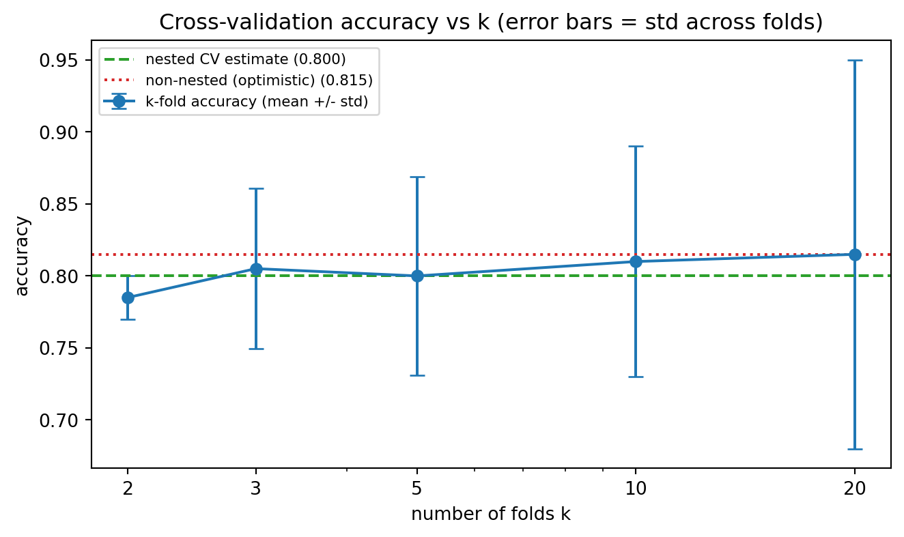

Cross-validation is the workhorse of empirical model assessment. Whenever we fit a model and report a performance number, an implicit question lurks underneath: how well will this model perform on data it has never seen? Cross-validation answers that question by repeatedly partitioning the available data into pieces used for fitting and pieces held out for scoring, then averaging the held-out scores. Done correctly, it gives a nearly unbiased estimate of generalization performance. Done carelessly, it produces numbers that look excellent in a notebook and collapse in production. This chapter develops the major cross-validation schemes, explains when each is appropriate, and dwells at length on the subtle ways that cross-validation produces optimistically biased estimates during model selection.
84.1 1. The Generalization Problem and the Holdout Estimator
84.1.1 1.1 What we are trying to estimate
Let a learning algorithm \(\mathcal{A}\) map a training set \(D\) to a fitted predictor \(\hat{f}_D\). For a loss function \(L\) and an unknown data distribution \(P\), the quantity of interest is the expected risk
averaged over training sets \(D\) of a given size \(n\). Cross-validation primarily estimates this second quantity, \(\mathrm{Err}(n)\), rather than the conditional risk \(R(\hat{f}_D)\) of the one specific fitted model. The distinction matters because it explains a recurring source of confusion: cross-validation tells you how well your procedure performs on average across datasets of size \(n\), not how well your one specific final model will perform. Indeed, the correlation between \(\widehat{\mathrm{CV}}\) and the conditional risk \(R(\hat{f}_D)\) is often weak, so cross-validation is best read as an estimate of the expected error of the learning algorithm at sample size \(n\).
84.1.2 1.2 The single holdout split
The simplest estimator splits \(D\) once into a training portion and a test portion. We fit on the training portion and evaluate on the test portion. This is unbiased for the risk of a model trained on the reduced sample size, but it suffers from high variance: a different random split can move the estimate substantially, especially with small datasets. It also wastes data, since the test rows never contribute to fitting. Cross-validation addresses both problems by rotating the role of each observation so that every point is used for both training and evaluation, just never simultaneously.
84.2 2. k-Fold Cross-Validation
84.2.1 2.1 The basic procedure
Partition the index set \(\{1, \dots, n\}\) into \(k\) roughly equal disjoint folds \(F_1, \dots, F_k\). For each fold \(j\), train on all data outside \(F_j\) and evaluate on \(F_j\). The cross-validation estimate is the average of the per-fold losses:
where \(\hat{f}^{(-F_j)}\) is the model fit without fold \(j\). Every observation is scored exactly once by a model that did not see it during training.
folds = split_indices(n, k=5, shuffle=True, seed=0)
for j in range(k):
train = concat(folds[:j] + folds[j+1:])
model = fit(X[train], y[train])
scores[j] = loss(y[folds[j]], model.predict(X[folds[j]]))
cv_estimate = mean(scores)
84.2.2 2.2 Choosing k and the bias-variance tradeoff
The choice of \(k\) trades bias against variance and cost. Each surrogate model is trained on \(n(1 - 1/k)\) points rather than the full \(n\), so \(\widehat{\mathrm{CV}}_k\) estimates \(\mathrm{Err}\!\left(n(1 - 1/k)\right)\), the error at the reduced sample size. Because the learning curve \(\mathrm{Err}(m)\) typically decreases in \(m\), training on fewer points yields a worse model, and the bias of \(k\)-fold as an estimator of \(\mathrm{Err}(n)\) is approximately
Small \(k\), such as \(k=2\), trains on only half the data, sits far back on the steep part of the learning curve, and is therefore pessimistically biased upward. As \(k\) grows the training size \(n(1 - 1/k)\) approaches \(n\), the gap \(\mathrm{Err}(n(1-1/k)) - \mathrm{Err}(n)\) shrinks toward zero, and the bias vanishes.
Variance moves the other way. Decompose the variance of the average of the \(k\) per-fold scores, treating them as \(k\) identically distributed terms with variance \(\sigma^2\) and average pairwise correlation \(\rho\):
The first term is the usual \(1/k\) averaging gain; the second is a correlation penalty that does not vanish as \(k\) grows. As \(k\) increases, the \(k\) surrogate training sets share more and more rows, so \(\rho\) rises toward \(1\), and the second term dominates. This is the precise sense in which large \(k\) fails to reduce variance as fast as naive \(1/k\) intuition suggests: the folds are not independent. The common choice \(k=5\) or \(k=10\) is a pragmatic compromise that keeps bias modest while holding the correlation penalty and compute reasonable. A useful rule of thumb is that \(k=10\) is rarely a bad default for datasets of moderate size.
84.2.3 2.3 Shuffling and reproducibility
Before partitioning, the data should usually be shuffled, because raw data is often sorted by class, time, or collection batch. Without shuffling, folds can become unrepresentative, for example one fold containing only a single class. Always fix and record the random seed so that reported numbers are reproducible.
84.3 3. Stratified Cross-Validation
84.3.1 3.1 Preserving class proportions
For classification, especially with imbalanced labels, ordinary random folds can have wildly different class frequencies. Stratified cross-validation constructs folds so that each fold preserves the overall class distribution as closely as possible. If the positive class has prevalence \(\pi\) in the full dataset, each fold also has prevalence approximately \(\pi\). This reduces the variance of the performance estimate and prevents pathological folds with too few or zero minority examples.
84.3.2 3.2 Why stratification reduces variance
The per-fold loss is a function of the fold composition. When class balance varies across folds, that variation injects extra spread into the per-fold scores that has nothing to do with the model and everything to do with sampling noise in the partition. Stratification removes this nuisance variation, so the average is a more stable estimate. For regression, an analogous idea stratifies on binned values of the target, which can help when the target is skewed.
# Stratified split keeps class j proportion equal across folds
for class_label in unique(y):
rows = indices_where(y == class_label)
distribute(rows, across=k_folds, round_robin=True)
84.4 4. Leave-One-Out and Leave-p-Out
84.4.1 4.1 The leave-one-out limit
Leave-one-out cross-validation (LOOCV) is the special case \(k = n\). Each fold is a single observation, so the model is trained \(n\) times on \(n-1\) points and tested on the one held-out point. Because each surrogate training set differs from the full set by only one row, the training size \(n - 1 \approx n\) and the bias term \(\mathrm{Err}(n-1) - \mathrm{Err}(n)\) is negligible. LOOCV is therefore approximately unbiased for \(\mathrm{Err}(n)\), the lowest-bias member of the \(k\)-fold family.
84.4.2 4.2 Variance and cost concerns
This low bias comes at the price of variance, the trade-off anticipated above with \(k = n\). The \(n\) training sets are almost identical, differing by a single row, so their per-fold errors are highly correlated: \(\rho \to 1\) in the variance decomposition of Section 2.2, the correlation penalty \(\frac{k-1}{k}\rho\sigma^2\) dominates, and the \(1/k\) averaging gain is almost entirely cancelled. The estimate can therefore be unstable despite its low bias, and for many problems a well-chosen \(k=10\) gives a lower mean squared error than LOOCV. LOOCV is also expensive, requiring \(n\) model fits, although for some models there are shortcuts. For ordinary least squares the leave-one-out error has a closed form using the hat matrix diagonal \(h_{ii}\):
which costs essentially one fit. The leave-p-out generalization holds out every subset of size \(p\) and is combinatorially expensive, so it is rarely used in practice.
84.5 5. Repeated Cross-Validation
84.5.1 5.1 Averaging over multiple partitions
A single \(k\)-fold split is itself a random object: a different shuffle yields a different estimate. Repeated cross-validation runs the entire \(k\)-fold procedure \(R\) times with different random partitions and averages all \(R \times k\) fold scores. This reduces the variance contributed by the particular choice of partition, producing a more reliable point estimate.
84.5.2 5.2 What repetition does and does not fix
Repetition averages away partition variance, the noise from how the data happened to be split. It does not reduce the irreducible variance coming from the finite dataset itself. Two practitioners with two different datasets of size \(n\) will still get different repeated cross-validation numbers no matter how many repeats they run. Repetition is most valuable when reporting a stable comparison between models on a single dataset, and less valuable when the dataset is large enough that a single \(k\)-fold pass is already stable. A typical setting is five repeats of ten-fold cross-validation.
84.6 6. Grouped Cross-Validation
84.6.1 6.1 When observations are not independent
Many datasets contain clusters of correlated rows that share a grouping variable: multiple measurements per patient, several photos of the same object, repeated transactions from one customer. If rows from the same group appear in both training and test folds, the model can memorize group-specific quirks and the cross-validation estimate becomes optimistic, because at deployment the model will face entirely new groups.
84.6.2 6.2 Group-aware partitioning
Grouped cross-validation, sometimes called group k-fold, assigns whole groups to folds so that no group is split across the train and test boundary. Every group appears in the test set in exactly one fold, and all its rows move together. This makes the held-out evaluation reflect the genuine deployment scenario of predicting on unseen groups.
# Each group's rows are kept entirely within one fold
assign_group_to_fold = {}
for g in groups_sorted_by_size_desc:
f = fold_with_fewest_rows()
assign_group_to_fold[g] = f
The same principle applies whenever the unit of generalization differs from the row. The question to ask is always: what new entity must the model handle in production, and does each test fold consist entirely of such unseen entities?
84.7 7. Time Series Cross-Validation
84.7.1 7.1 Why random folds break under temporal dependence
Time series data violates the exchangeability assumption behind ordinary cross-validation. Observations are ordered, autocorrelated, and often nonstationary. The standard cross-validation argument assumes the pairs \((x_i, y_i)\) are independent and identically distributed, so that any held-out point is a fair sample from the same \(P\) as the training points. Under temporal dependence this fails: \(y_t\) is correlated with \(y_{t-1}, y_{t-2}, \dots\), so a held-out point that sits between two training points is partly predictable from its neighbors. Random folds let the model train on future points \(t' > t\) and test on past points \(t\), a form of leakage that has no analogue at deployment, where at time \(t\) only \(\{(x_s, y_s) : s \le t\}\) is available. The result is a performance estimate that is far too optimistic.
84.7.2 7.2 Forward chaining and rolling windows
The remedy is to respect the arrow of time. In forward chaining, also called expanding window evaluation, each successive fold trains on all data up to a cutoff time and tests on the next block:
Split 1: train [1..100] test [101..120]
Split 2: train [1..120] test [121..140]
Split 3: train [1..140] test [141..160]
A rolling window variant keeps the training window a fixed length, sliding it forward, which suits nonstationary series where old data is no longer representative. To prevent leakage from autocorrelation near the boundary, one can insert a gap of omitted observations between the training and test segments, a technique sometimes called purging with an embargo. This is especially important in financial settings where labels are constructed from overlapping future windows.
84.7.3 7.3 Estimating risk under drift
Time series cross-validation also serves a second purpose beyond avoiding leakage. By evaluating on chronologically later blocks, it measures how the model degrades as the gap between training and deployment grows, surfacing nonstationarity that a shuffled scheme would hide entirely.
84.8 8. Nested Cross-Validation and Optimistic Bias
84.8.1 8.1 The core problem: reusing test folds for selection
The deepest pitfall in applied machine learning is using the same cross-validation results both to tune the model and to report its performance. Suppose we try \(m\) hyperparameter configurations and pick the one with the best cross-validation score. Model each configuration’s score as \(S_c = \mu_c + \varepsilon_c\), where \(\mu_c\) is its true error and \(\varepsilon_c\) is mean-zero estimation noise with variance \(\tau^2\). Reporting \(\min_c S_c\) as the performance of the selected model is biased downward, because the minimum of noisy estimates undershoots the minimum of the true means:
The gap widens with the number of configurations \(m\) and with the noise level \(\tau\). In the extreme where all configurations are equally good (\(\mu_c \equiv \mu\)) and the noise is Gaussian and independent, the selection bias grows like \(\tau\sqrt{2\ln m}\), the expected magnitude of the most extreme of \(m\) draws. We have implicitly fit the cross-validation folds: the selected configuration is the one whose noise \(\varepsilon_c\) happened to be most favorable, and that favorable noise does not recur on fresh data. The reported number then overstates true performance, sometimes dramatically when the search space is large.
84.8.2 8.2 The structure of nested cross-validation
Nested cross-validation separates the two roles into two loops. The outer loop estimates generalization; the inner loop performs model selection. For each outer training partition, a complete inner cross-validation chooses hyperparameters using only that outer training data. The selected configuration is then refit on the full outer training partition and scored once on the untouched outer test fold.
for outer_train, outer_test in outer_folds:
best_cfg = None; best_score = inf
for cfg in search_space:
inner_scores = []
for inner_train, inner_val in inner_folds(outer_train):
m = fit(X[inner_train], y[inner_train], cfg)
inner_scores.append(loss(y[inner_val], m.predict(X[inner_val])))
if mean(inner_scores) < best_score:
best_score, best_cfg = mean(inner_scores), cfg
m = fit(X[outer_train], y[outer_train], best_cfg)
outer_scores.append(loss(y[outer_test], m.predict(X[outer_test])))
generalization_estimate = mean(outer_scores)
Because the outer test fold never influences hyperparameter choice, the outer average is an almost unbiased estimate of the performance of the entire tuning procedure.
84.8.3 8.3 What nested cross-validation estimates
A frequent misunderstanding is to expect nested cross-validation to output a single best model. It does not. It estimates the generalization performance of the model selection procedure, treating that procedure as the object under evaluation. Different outer folds may even select different hyperparameters, and that is expected: variation in the chosen configuration is part of the procedure’s behavior. Once you trust the procedure’s estimated quality, you run the inner selection one final time on all the data to produce the model you actually ship.
84.8.4 8.4 Leakage from preprocessing
Optimistic bias also creeps in through preprocessing performed before splitting. Fitting a scaler, imputer, feature selector, or dimensionality reducer on the entire dataset and then cross-validating leaks information from the test folds into training, because those transformations saw the held-out rows. The fix is to place every data-dependent transformation inside the cross-validation loop, fitting it only on each training fold and applying it to the corresponding test fold. Bundling the transforms and the estimator into a single pipeline object makes this automatic and is the single most effective guard against silent leakage.
pipeline = make_pipeline(StandardScaler(), SelectKBest(k=20), Classifier())
# Whole pipeline is refit inside every fold, so the scaler and the
# feature selector never observe held-out rows.
cv_estimate = cross_validate(pipeline, X, y, cv=stratified_kfold)
84.8.5 8.5 Practical guidance for honest selection
Several habits keep selection honest. First, decide the evaluation protocol before looking at results, so that the search space and the metric are not tuned to the test folds after the fact. Second, prefer nested cross-validation, or at minimum a held-out test set that is touched exactly once, whenever hyperparameters are tuned. Third, report variability, not just a point estimate; the spread of outer-fold scores conveys how reliable the comparison is. Fourth, when comparing two models, account for the correlation induced by shared folds, since naive paired tests on cross-validation scores violate independence and overstate significance. Corrected resampling procedures exist for this purpose.
84.9 9. Choosing a Scheme in Practice
84.9.1 9.1 A decision checklist
The appropriate scheme follows from the structure of the data and the deployment target. Ask the following in order. Are observations independent, or are they grouped by a shared entity? If grouped, use grouped cross-validation. Is there a temporal or otherwise ordered dependence? If so, use forward chaining and never shuffle across time. Is the target a class label, particularly an imbalanced one? Then stratify. Is the dataset small enough that variance dominates? Then favor repeated cross-validation, and consider larger \(k\). Are hyperparameters being tuned? Then wrap everything in nested cross-validation and put all preprocessing inside the pipeline.
84.9.2 9.2 Putting it together
These choices compose. A medical study with imbalanced outcomes and multiple visits per patient calls for grouped, stratified cross-validation. A demand forecasting problem with hyperparameter tuning calls for nested forward chaining with an embargo gap. The unifying principle behind every variant is the same: the held-out data must mirror, as faithfully as possible, the data the model will face at deployment, and nothing about that held-out data may influence training or selection. Hold to that principle and cross-validation rewards you with estimates you can trust; violate it and you get numbers that flatter you right up until the model meets reality.
84.10 10. Worked Example and Multi-Language Implementations
84.10.1 10.1 Variance versus k and the optimism of non-nested selection
The cell below makes two of the chapter’s central claims concrete on a small, deliberately noisy classification dataset. First it reports the \(k\)-fold accuracy estimate and the spread of the per-fold scores as \(k\) ranges from \(2\) to \(20\), illustrating how the across-fold standard deviation grows as folds shrink. Second it contrasts non-nested selection, which tunes and reports on the same folds, against nested cross-validation, exposing the upward bias of the non-nested protocol. The seed is fixed so the numbers reproduce exactly.
Code
import numpy as npimport matplotlib.pyplot as pltfrom sklearn.datasets import make_classificationfrom sklearn.svm import SVCfrom sklearn.model_selection import ( StratifiedKFold, cross_val_score, GridSearchCV, cross_validate,)RNG =0np.random.seed(RNG)# A modest, noisy dataset so that selection optimism is visible.X, y = make_classification( n_samples=200, n_features=20, n_informative=5, n_redundant=2, class_sep=0.8, flip_y=0.10, random_state=RNG,)# --- Part 1: variance of the CV estimate as k varies -----------------------print("k-fold accuracy estimate vs k (SVC, RBF kernel)")print(f"{'k':>4}{'mean_acc':>10}{'std_across_folds':>18}")ks = (2, 3, 5, 10, 20)k_means, k_stds = [], []for k in ks: skf = StratifiedKFold(n_splits=k, shuffle=True, random_state=RNG) scores = cross_val_score(SVC(kernel="rbf", C=1.0, gamma="scale"), X, y, cv=skf) k_means.append(scores.mean()) k_stds.append(scores.std())print(f"{k:>4}{scores.mean():>10.4f}{scores.std():>18.4f}")# --- Part 2: optimism of non-nested selection vs nested CV -----------------param_grid = {"C": [0.01, 0.1, 1, 10, 100], "gamma": [1e-3, 1e-2, 1e-1, 1]}inner = StratifiedKFold(n_splits=5, shuffle=True, random_state=RNG)outer = StratifiedKFold(n_splits=5, shuffle=True, random_state=RNG +1)# Non-nested: tune and report on the SAME folds (the optimistic protocol).grid = GridSearchCV(SVC(kernel="rbf"), param_grid, cv=inner)grid.fit(X, y)non_nested = grid.best_score_# Nested: outer folds never see the tuning, so the estimate is honest.nested = cross_validate( GridSearchCV(SVC(kernel="rbf"), param_grid, cv=inner), X, y, cv=outer,)["test_score"]print("\nNested vs non-nested cross-validation")print(f"non-nested (tuned and reported on same folds): {non_nested:.4f}")print(f"nested (honest outer estimate) : {nested.mean():.4f}"f" +/- {nested.std():.4f}")print(f"optimism of non-nested selection : {non_nested - nested.mean():+.4f}")# --- Figure: CV accuracy vs k, with across-fold standard-deviation bars -----fig, ax = plt.subplots(figsize=(7, 4.2))ax.errorbar( ks, k_means, yerr=k_stds, marker="o", capsize=4, color="#1f77b4", ecolor="#1f77b4", label="k-fold accuracy (mean +/- std)",)ax.axhline( nested.mean(), color="#2ca02c", linestyle="--", label=f"nested CV estimate ({nested.mean():.3f})",)ax.axhline( non_nested, color="#d62728", linestyle=":", label=f"non-nested (optimistic) ({non_nested:.3f})",)ax.set_xscale("log")ax.set_xticks(ks)ax.get_xaxis().set_major_formatter(plt.matplotlib.ticker.ScalarFormatter())ax.set_xlabel("number of folds k")ax.set_ylabel("accuracy")ax.set_title("Cross-validation accuracy vs k (error bars = std across folds)")ax.legend(loc="best", fontsize=8)fig.tight_layout()plt.show()
k-fold accuracy estimate vs k (SVC, RBF kernel)
k mean_acc std_across_folds
2 0.7850 0.0150
3 0.8051 0.0556
5 0.8000 0.0689
10 0.8100 0.0800
20 0.8150 0.1352
Nested vs non-nested cross-validation
non-nested (tuned and reported on same folds): 0.8150
nested (honest outer estimate) : 0.8000 +/- 0.0652
optimism of non-nested selection : +0.0150

The non-nested score lands above the nested estimate: the best inner score is the maximum over a grid of noisy estimates, and that maximum does not survive contact with the untouched outer folds. The gap is the selection bias derived in Section 8.1, here on a small dataset where it is easy to reproduce.
84.10.2 10.2 The same logic in three languages
The mechanics of \(k\)-fold are identical across ecosystems: shuffle, partition into folds, rotate the held-out fold, average the held-out scores. The Python panel is executable; the Julia and Rust panels are illustrative.
// Illustrative: manual stratified k-fold over indices with the `linfa` crate.uselinfa::prelude::*;uselinfa_logistic::LogisticRegression;usendarray::{Array1, Array2};fn k_fold_accuracy(x:&Array2<f64>, y:&Array1<usize>, k:usize) ->f64{let n = x.nrows();let fold_size = n / k;letmut scores =Vec::with_capacity(k);for j in0..k {let test = j * fold_size..(j +1) * fold_size;// Build train/test splits from the index ranges, fit, then score.let train =Dataset::new(x.clone(), y.clone());// placeholder splitlet model =LogisticRegression::default().fit(&train).unwrap();let pred = model.predict(&train); scores.push(pred.confusion_matrix(&train).unwrap().accuracy());let _ = test;} scores.iter().sum::<f32>() asf64/ k asf64}
84.11 References
Stone, M. (1974). Cross-Validatory Choice and Assessment of Statistical Predictions. Journal of the Royal Statistical Society, Series B, 36(2), 111 to 147. https://doi.org/10.1111/j.2517-6161.1974.tb00994.x
Varma, S., Simon, R. (2006). Bias in Error Estimation when Using Cross-Validation for Model Selection. BMC Bioinformatics, 7, 91. https://doi.org/10.1186/1471-2105-7-91
Kohavi, R. (1995). A Study of Cross-Validation and Bootstrap for Accuracy Estimation and Model Selection. Proceedings of IJCAI 1995, 1137 to 1143. https://www.ijcai.org/Proceedings/95-2/Papers/016.pdf
Hastie, T., Tibshirani, R., Friedman, J. (2009). The Elements of Statistical Learning, 2nd ed., Chapter 7. Springer. https://doi.org/10.1007/978-0-387-84858-7
Cawley, G. C., Talbot, N. L. C. (2010). On Over-fitting in Model Selection and Subsequent Selection Bias in Performance Evaluation. Journal of Machine Learning Research, 11, 2079 to 2107. https://www.jmlr.org/papers/v11/cawley10a.html
Bergmeir, C., Benitez, J. M. (2012). On the Use of Cross-Validation for Time Series Predictor Evaluation. Information Sciences, 191, 192 to 213. https://doi.org/10.1016/j.ins.2011.12.028
Nadeau, C., Bengio, Y. (2003). Inference for the Generalization Error. Machine Learning, 52, 239 to 281. https://doi.org/10.1023/A:1024068626366
Bengio, Y., Grandvalet, Y. (2004). No Unbiased Estimator of the Variance of K-Fold Cross-Validation. Journal of Machine Learning Research, 5, 1089 to 1105. https://www.jmlr.org/papers/v5/grandvalet04a.html
Arlot, S., Celisse, A. (2010). A Survey of Cross-Validation Procedures for Model Selection. Statistics Surveys, 4, 40 to 79. https://doi.org/10.1214/09-SS054
Lopez de Prado, M. (2018). Advances in Financial Machine Learning, Chapter 7: Cross-Validation in Finance. Wiley. https://www.wiley.com/en-us/Advances+in+Financial+Machine+Learning-p-9781119482086
Pedregosa, F., et al. (2011). Scikit-learn: Machine Learning in Python. Journal of Machine Learning Research, 12, 2825 to 2830. https://www.jmlr.org/papers/v12/pedregosa11a.html
Source Code
# Cross-Validation TechniquesCross-validation is the workhorse of empirical model assessment. Whenever we fit a model and report a performance number, an implicit question lurks underneath: how well will this model perform on data it has never seen? Cross-validation answers that question by repeatedly partitioning the available data into pieces used for fitting and pieces held out for scoring, then averaging the held-out scores. Done correctly, it gives a nearly unbiased estimate of generalization performance. Done carelessly, it produces numbers that look excellent in a notebook and collapse in production. This chapter develops the major cross-validation schemes, explains when each is appropriate, and dwells at length on the subtle ways that cross-validation produces optimistically biased estimates during model selection.## 1. The Generalization Problem and the Holdout Estimator### 1.1 What we are trying to estimateLet a learning algorithm $\mathcal{A}$ map a training set $D$ to a fitted predictor $\hat{f}_D$. For a loss function $L$ and an unknown data distribution $P$, the quantity of interest is the expected risk$$R(\hat{f}_D) = \mathbb{E}_{(x,y)\sim P}\, L\big(y, \hat{f}_D(x)\big).$$We never observe $P$, so we cannot compute $R$ directly. A second, related target is the expected risk of the algorithm itself,$$\mathrm{Err}(n) = \mathbb{E}_{D \sim P^n}\, R(\hat{f}_D) = \mathbb{E}_{D}\, \mathbb{E}_{(x,y)\sim P}\, L\big(y, \hat{f}_D(x)\big),$$averaged over training sets $D$ of a given size $n$. Cross-validation primarily estimates this second quantity, $\mathrm{Err}(n)$, rather than the conditional risk $R(\hat{f}_D)$ of the one specific fitted model. The distinction matters because it explains a recurring source of confusion: cross-validation tells you how well your procedure performs on average across datasets of size $n$, not how well your one specific final model will perform. Indeed, the correlation between $\widehat{\mathrm{CV}}$ and the conditional risk $R(\hat{f}_D)$ is often weak, so cross-validation is best read as an estimate of the expected error of the learning algorithm at sample size $n$.### 1.2 The single holdout splitThe simplest estimator splits $D$ once into a training portion and a test portion. We fit on the training portion and evaluate on the test portion. This is unbiased for the risk of a model trained on the reduced sample size, but it suffers from high variance: a different random split can move the estimate substantially, especially with small datasets. It also wastes data, since the test rows never contribute to fitting. Cross-validation addresses both problems by rotating the role of each observation so that every point is used for both training and evaluation, just never simultaneously.## 2. k-Fold Cross-Validation### 2.1 The basic procedurePartition the index set $\{1, \dots, n\}$ into $k$ roughly equal disjoint folds $F_1, \dots, F_k$. For each fold $j$, train on all data outside $F_j$ and evaluate on $F_j$. The cross-validation estimate is the average of the per-fold losses:$$\widehat{\mathrm{CV}}_k = \frac{1}{n} \sum_{j=1}^{k} \sum_{i \in F_j} L\big(y_i, \hat{f}^{(-F_j)}(x_i)\big),$$where $\hat{f}^{(-F_j)}$ is the model fit without fold $j$. Every observation is scored exactly once by a model that did not see it during training.```textfolds = split_indices(n, k=5, shuffle=True, seed=0)for j in range(k): train = concat(folds[:j] + folds[j+1:]) model = fit(X[train], y[train]) scores[j] = loss(y[folds[j]], model.predict(X[folds[j]]))cv_estimate = mean(scores)```### 2.2 Choosing k and the bias-variance tradeoffThe choice of $k$ trades bias against variance and cost. Each surrogate model is trained on $n(1 - 1/k)$ points rather than the full $n$, so $\widehat{\mathrm{CV}}_k$ estimates $\mathrm{Err}\!\left(n(1 - 1/k)\right)$, the error at the reduced sample size. Because the learning curve $\mathrm{Err}(m)$ typically decreases in $m$, training on fewer points yields a worse model, and the bias of $k$-fold as an estimator of $\mathrm{Err}(n)$ is approximately$$\mathbb{E}\big[\widehat{\mathrm{CV}}_k\big] - \mathrm{Err}(n) \approx \mathrm{Err}\!\left(n\big(1 - \tfrac{1}{k}\right)\big) - \mathrm{Err}(n) \;\ge\; 0 .$$Small $k$, such as $k=2$, trains on only half the data, sits far back on the steep part of the learning curve, and is therefore pessimistically biased upward. As $k$ grows the training size $n(1 - 1/k)$ approaches $n$, the gap $\mathrm{Err}(n(1-1/k)) - \mathrm{Err}(n)$ shrinks toward zero, and the bias vanishes.Variance moves the other way. Decompose the variance of the average of the $k$ per-fold scores, treating them as $k$ identically distributed terms with variance $\sigma^2$ and average pairwise correlation $\rho$:$$\mathrm{Var}\big(\widehat{\mathrm{CV}}_k\big) \approx \frac{\sigma^2}{k} + \frac{k-1}{k}\,\rho\,\sigma^2 .$$The first term is the usual $1/k$ averaging gain; the second is a correlation penalty that does not vanish as $k$ grows. As $k$ increases, the $k$ surrogate training sets share more and more rows, so $\rho$ rises toward $1$, and the second term dominates. This is the precise sense in which large $k$ fails to reduce variance as fast as naive $1/k$ intuition suggests: the folds are not independent. The common choice $k=5$ or $k=10$ is a pragmatic compromise that keeps bias modest while holding the correlation penalty and compute reasonable. A useful rule of thumb is that $k=10$ is rarely a bad default for datasets of moderate size.### 2.3 Shuffling and reproducibilityBefore partitioning, the data should usually be shuffled, because raw data is often sorted by class, time, or collection batch. Without shuffling, folds can become unrepresentative, for example one fold containing only a single class. Always fix and record the random seed so that reported numbers are reproducible.## 3. Stratified Cross-Validation### 3.1 Preserving class proportionsFor classification, especially with imbalanced labels, ordinary random folds can have wildly different class frequencies. Stratified cross-validation constructs folds so that each fold preserves the overall class distribution as closely as possible. If the positive class has prevalence $\pi$ in the full dataset, each fold also has prevalence approximately $\pi$. This reduces the variance of the performance estimate and prevents pathological folds with too few or zero minority examples.### 3.2 Why stratification reduces varianceThe per-fold loss is a function of the fold composition. When class balance varies across folds, that variation injects extra spread into the per-fold scores that has nothing to do with the model and everything to do with sampling noise in the partition. Stratification removes this nuisance variation, so the average is a more stable estimate. For regression, an analogous idea stratifies on binned values of the target, which can help when the target is skewed.```text# Stratified split keeps class j proportion equal across foldsfor class_label in unique(y): rows = indices_where(y == class_label) distribute(rows, across=k_folds, round_robin=True)```## 4. Leave-One-Out and Leave-p-Out### 4.1 The leave-one-out limitLeave-one-out cross-validation (LOOCV) is the special case $k = n$. Each fold is a single observation, so the model is trained $n$ times on $n-1$ points and tested on the one held-out point. Because each surrogate training set differs from the full set by only one row, the training size $n - 1 \approx n$ and the bias term $\mathrm{Err}(n-1) - \mathrm{Err}(n)$ is negligible. LOOCV is therefore approximately unbiased for $\mathrm{Err}(n)$, the lowest-bias member of the $k$-fold family.### 4.2 Variance and cost concernsThis low bias comes at the price of variance, the trade-off anticipated above with $k = n$. The $n$ training sets are almost identical, differing by a single row, so their per-fold errors are highly correlated: $\rho \to 1$ in the variance decomposition of Section 2.2, the correlation penalty $\frac{k-1}{k}\rho\sigma^2$ dominates, and the $1/k$ averaging gain is almost entirely cancelled. The estimate can therefore be unstable despite its low bias, and for many problems a well-chosen $k=10$ gives a lower mean squared error than LOOCV. LOOCV is also expensive, requiring $n$ model fits, although for some models there are shortcuts. For ordinary least squares the leave-one-out error has a closed form using the hat matrix diagonal $h_{ii}$:$$\widehat{\mathrm{CV}}_{\mathrm{LOO}} = \frac{1}{n} \sum_{i=1}^{n} \left( \frac{y_i - \hat{y}_i}{1 - h_{ii}} \right)^2,$$which costs essentially one fit. The leave-p-out generalization holds out every subset of size $p$ and is combinatorially expensive, so it is rarely used in practice.## 5. Repeated Cross-Validation### 5.1 Averaging over multiple partitionsA single $k$-fold split is itself a random object: a different shuffle yields a different estimate. Repeated cross-validation runs the entire $k$-fold procedure $R$ times with different random partitions and averages all $R \times k$ fold scores. This reduces the variance contributed by the particular choice of partition, producing a more reliable point estimate.### 5.2 What repetition does and does not fixRepetition averages away partition variance, the noise from how the data happened to be split. It does not reduce the irreducible variance coming from the finite dataset itself. Two practitioners with two different datasets of size $n$ will still get different repeated cross-validation numbers no matter how many repeats they run. Repetition is most valuable when reporting a stable comparison between models on a single dataset, and less valuable when the dataset is large enough that a single $k$-fold pass is already stable. A typical setting is five repeats of ten-fold cross-validation.## 6. Grouped Cross-Validation### 6.1 When observations are not independentMany datasets contain clusters of correlated rows that share a grouping variable: multiple measurements per patient, several photos of the same object, repeated transactions from one customer. If rows from the same group appear in both training and test folds, the model can memorize group-specific quirks and the cross-validation estimate becomes optimistic, because at deployment the model will face entirely new groups.### 6.2 Group-aware partitioningGrouped cross-validation, sometimes called group k-fold, assigns whole groups to folds so that no group is split across the train and test boundary. Every group appears in the test set in exactly one fold, and all its rows move together. This makes the held-out evaluation reflect the genuine deployment scenario of predicting on unseen groups.```text# Each group's rows are kept entirely within one foldassign_group_to_fold = {}for g in groups_sorted_by_size_desc: f = fold_with_fewest_rows() assign_group_to_fold[g] = f```The same principle applies whenever the unit of generalization differs from the row. The question to ask is always: what new entity must the model handle in production, and does each test fold consist entirely of such unseen entities?## 7. Time Series Cross-Validation### 7.1 Why random folds break under temporal dependenceTime series data violates the exchangeability assumption behind ordinary cross-validation. Observations are ordered, autocorrelated, and often nonstationary. The standard cross-validation argument assumes the pairs $(x_i, y_i)$ are independent and identically distributed, so that any held-out point is a fair sample from the same $P$ as the training points. Under temporal dependence this fails: $y_t$ is correlated with $y_{t-1}, y_{t-2}, \dots$, so a held-out point that sits between two training points is partly predictable from its neighbors. Random folds let the model train on future points $t' > t$ and test on past points $t$, a form of leakage that has no analogue at deployment, where at time $t$ only $\{(x_s, y_s) : s \le t\}$ is available. The result is a performance estimate that is far too optimistic.### 7.2 Forward chaining and rolling windowsThe remedy is to respect the arrow of time. In forward chaining, also called expanding window evaluation, each successive fold trains on all data up to a cutoff time and tests on the next block:```textSplit 1: train [1..100] test [101..120]Split 2: train [1..120] test [121..140]Split 3: train [1..140] test [141..160]```A rolling window variant keeps the training window a fixed length, sliding it forward, which suits nonstationary series where old data is no longer representative. To prevent leakage from autocorrelation near the boundary, one can insert a gap of omitted observations between the training and test segments, a technique sometimes called purging with an embargo. This is especially important in financial settings where labels are constructed from overlapping future windows.### 7.3 Estimating risk under driftTime series cross-validation also serves a second purpose beyond avoiding leakage. By evaluating on chronologically later blocks, it measures how the model degrades as the gap between training and deployment grows, surfacing nonstationarity that a shuffled scheme would hide entirely.## 8. Nested Cross-Validation and Optimistic Bias### 8.1 The core problem: reusing test folds for selectionThe deepest pitfall in applied machine learning is using the same cross-validation results both to tune the model and to report its performance. Suppose we try $m$ hyperparameter configurations and pick the one with the best cross-validation score. Model each configuration's score as $S_c = \mu_c + \varepsilon_c$, where $\mu_c$ is its true error and $\varepsilon_c$ is mean-zero estimation noise with variance $\tau^2$. Reporting $\min_c S_c$ as the performance of the selected model is biased downward, because the minimum of noisy estimates undershoots the minimum of the true means:$$\mathbb{E}\big[\min_c S_c\big] \;\le\; \min_c \mathbb{E}[S_c] = \min_c \mu_c .$$The gap widens with the number of configurations $m$ and with the noise level $\tau$. In the extreme where all configurations are equally good ($\mu_c \equiv \mu$) and the noise is Gaussian and independent, the selection bias grows like $\tau\sqrt{2\ln m}$, the expected magnitude of the most extreme of $m$ draws. We have implicitly fit the cross-validation folds: the selected configuration is the one whose noise $\varepsilon_c$ happened to be most favorable, and that favorable noise does not recur on fresh data. The reported number then overstates true performance, sometimes dramatically when the search space is large.### 8.2 The structure of nested cross-validationNested cross-validation separates the two roles into two loops. The outer loop estimates generalization; the inner loop performs model selection. For each outer training partition, a complete inner cross-validation chooses hyperparameters using only that outer training data. The selected configuration is then refit on the full outer training partition and scored once on the untouched outer test fold.```textfor outer_train, outer_test in outer_folds: best_cfg = None; best_score = inf for cfg in search_space: inner_scores = [] for inner_train, inner_val in inner_folds(outer_train): m = fit(X[inner_train], y[inner_train], cfg) inner_scores.append(loss(y[inner_val], m.predict(X[inner_val]))) if mean(inner_scores) < best_score: best_score, best_cfg = mean(inner_scores), cfg m = fit(X[outer_train], y[outer_train], best_cfg) outer_scores.append(loss(y[outer_test], m.predict(X[outer_test])))generalization_estimate = mean(outer_scores)```Because the outer test fold never influences hyperparameter choice, the outer average is an almost unbiased estimate of the performance of the entire tuning procedure.### 8.3 What nested cross-validation estimatesA frequent misunderstanding is to expect nested cross-validation to output a single best model. It does not. It estimates the generalization performance of the model selection procedure, treating that procedure as the object under evaluation. Different outer folds may even select different hyperparameters, and that is expected: variation in the chosen configuration is part of the procedure's behavior. Once you trust the procedure's estimated quality, you run the inner selection one final time on all the data to produce the model you actually ship.### 8.4 Leakage from preprocessingOptimistic bias also creeps in through preprocessing performed before splitting. Fitting a scaler, imputer, feature selector, or dimensionality reducer on the entire dataset and then cross-validating leaks information from the test folds into training, because those transformations saw the held-out rows. The fix is to place every data-dependent transformation inside the cross-validation loop, fitting it only on each training fold and applying it to the corresponding test fold. Bundling the transforms and the estimator into a single pipeline object makes this automatic and is the single most effective guard against silent leakage.```textpipeline = make_pipeline(StandardScaler(), SelectKBest(k=20), Classifier())# Whole pipeline is refit inside every fold, so the scaler and the# feature selector never observe held-out rows.cv_estimate = cross_validate(pipeline, X, y, cv=stratified_kfold)```### 8.5 Practical guidance for honest selectionSeveral habits keep selection honest. First, decide the evaluation protocol before looking at results, so that the search space and the metric are not tuned to the test folds after the fact. Second, prefer nested cross-validation, or at minimum a held-out test set that is touched exactly once, whenever hyperparameters are tuned. Third, report variability, not just a point estimate; the spread of outer-fold scores conveys how reliable the comparison is. Fourth, when comparing two models, account for the correlation induced by shared folds, since naive paired tests on cross-validation scores violate independence and overstate significance. Corrected resampling procedures exist for this purpose.## 9. Choosing a Scheme in Practice### 9.1 A decision checklistThe appropriate scheme follows from the structure of the data and the deployment target. Ask the following in order. Are observations independent, or are they grouped by a shared entity? If grouped, use grouped cross-validation. Is there a temporal or otherwise ordered dependence? If so, use forward chaining and never shuffle across time. Is the target a class label, particularly an imbalanced one? Then stratify. Is the dataset small enough that variance dominates? Then favor repeated cross-validation, and consider larger $k$. Are hyperparameters being tuned? Then wrap everything in nested cross-validation and put all preprocessing inside the pipeline.### 9.2 Putting it togetherThese choices compose. A medical study with imbalanced outcomes and multiple visits per patient calls for grouped, stratified cross-validation. A demand forecasting problem with hyperparameter tuning calls for nested forward chaining with an embargo gap. The unifying principle behind every variant is the same: the held-out data must mirror, as faithfully as possible, the data the model will face at deployment, and nothing about that held-out data may influence training or selection. Hold to that principle and cross-validation rewards you with estimates you can trust; violate it and you get numbers that flatter you right up until the model meets reality.## 10. Worked Example and Multi-Language Implementations### 10.1 Variance versus k and the optimism of non-nested selectionThe cell below makes two of the chapter's central claims concrete on a small, deliberately noisy classification dataset. First it reports the $k$-fold accuracy estimate and the spread of the per-fold scores as $k$ ranges from $2$ to $20$, illustrating how the across-fold standard deviation grows as folds shrink. Second it contrasts non-nested selection, which tunes and reports on the same folds, against nested cross-validation, exposing the upward bias of the non-nested protocol. The seed is fixed so the numbers reproduce exactly.```{python}import numpy as npimport matplotlib.pyplot as pltfrom sklearn.datasets import make_classificationfrom sklearn.svm import SVCfrom sklearn.model_selection import ( StratifiedKFold, cross_val_score, GridSearchCV, cross_validate,)RNG =0np.random.seed(RNG)# A modest, noisy dataset so that selection optimism is visible.X, y = make_classification( n_samples=200, n_features=20, n_informative=5, n_redundant=2, class_sep=0.8, flip_y=0.10, random_state=RNG,)# --- Part 1: variance of the CV estimate as k varies -----------------------print("k-fold accuracy estimate vs k (SVC, RBF kernel)")print(f"{'k':>4}{'mean_acc':>10}{'std_across_folds':>18}")ks = (2, 3, 5, 10, 20)k_means, k_stds = [], []for k in ks: skf = StratifiedKFold(n_splits=k, shuffle=True, random_state=RNG) scores = cross_val_score(SVC(kernel="rbf", C=1.0, gamma="scale"), X, y, cv=skf) k_means.append(scores.mean()) k_stds.append(scores.std())print(f"{k:>4}{scores.mean():>10.4f}{scores.std():>18.4f}")# --- Part 2: optimism of non-nested selection vs nested CV -----------------param_grid = {"C": [0.01, 0.1, 1, 10, 100], "gamma": [1e-3, 1e-2, 1e-1, 1]}inner = StratifiedKFold(n_splits=5, shuffle=True, random_state=RNG)outer = StratifiedKFold(n_splits=5, shuffle=True, random_state=RNG +1)# Non-nested: tune and report on the SAME folds (the optimistic protocol).grid = GridSearchCV(SVC(kernel="rbf"), param_grid, cv=inner)grid.fit(X, y)non_nested = grid.best_score_# Nested: outer folds never see the tuning, so the estimate is honest.nested = cross_validate( GridSearchCV(SVC(kernel="rbf"), param_grid, cv=inner), X, y, cv=outer,)["test_score"]print("\nNested vs non-nested cross-validation")print(f"non-nested (tuned and reported on same folds): {non_nested:.4f}")print(f"nested (honest outer estimate) : {nested.mean():.4f}"f" +/- {nested.std():.4f}")print(f"optimism of non-nested selection : {non_nested - nested.mean():+.4f}")# --- Figure: CV accuracy vs k, with across-fold standard-deviation bars -----fig, ax = plt.subplots(figsize=(7, 4.2))ax.errorbar( ks, k_means, yerr=k_stds, marker="o", capsize=4, color="#1f77b4", ecolor="#1f77b4", label="k-fold accuracy (mean +/- std)",)ax.axhline( nested.mean(), color="#2ca02c", linestyle="--", label=f"nested CV estimate ({nested.mean():.3f})",)ax.axhline( non_nested, color="#d62728", linestyle=":", label=f"non-nested (optimistic) ({non_nested:.3f})",)ax.set_xscale("log")ax.set_xticks(ks)ax.get_xaxis().set_major_formatter(plt.matplotlib.ticker.ScalarFormatter())ax.set_xlabel("number of folds k")ax.set_ylabel("accuracy")ax.set_title("Cross-validation accuracy vs k (error bars = std across folds)")ax.legend(loc="best", fontsize=8)fig.tight_layout()plt.show()```The non-nested score lands above the nested estimate: the best inner score is the maximum over a grid of noisy estimates, and that maximum does not survive contact with the untouched outer folds. The gap is the selection bias derived in Section 8.1, here on a small dataset where it is easy to reproduce.### 10.2 The same logic in three languagesThe mechanics of $k$-fold are identical across ecosystems: shuffle, partition into folds, rotate the held-out fold, average the held-out scores. The Python panel is executable; the Julia and Rust panels are illustrative.::: {.panel-tabset}## Python executable```{python}import numpy as npfrom sklearn.linear_model import LogisticRegressionfrom sklearn.model_selection import StratifiedKFold, cross_val_scorerng = np.random.default_rng(0)n =200X = rng.normal(size=(n, 4))y = (X[:, 0] +0.5* X[:, 1] + rng.normal(scale=0.5, size=n) >0).astype(int)skf = StratifiedKFold(n_splits=5, shuffle=True, random_state=0)acc = cross_val_score(LogisticRegression(), X, y, cv=skf)print(f"5-fold accuracy: {acc.mean():.4f} +/- {acc.std():.4f}")```## Julia```juliausingMLJ, StableRNGsrng =StableRNG(0)X = (a =randn(rng, 200), b =randn(rng, 200))y =categorical(X.a .+0.5.* X.b .+0.5.*randn(rng, 200) .>0)LogReg =@load LogisticClassifier pkg=MLJLinearModelsmach =machine(LogReg(), X, y)cv =StratifiedCV(nfolds =5, shuffle =true, rng = rng)result =evaluate!(mach, resampling = cv, measure = accuracy)println("5-fold accuracy: ", round(result.measurement[1], digits =4))```## Rust```rust// Illustrative: manual stratified k-fold over indices with the `linfa` crate.use linfa::prelude::*;use linfa_logistic::LogisticRegression;use ndarray::{Array1, Array2};fn k_fold_accuracy(x:&Array2<f64>, y:&Array1<usize>, k: usize) -> f64 { let n =x.nrows(); let fold_size = n / k; let mut scores = Vec::with_capacity(k);for j in0..k { let test = j *fold_size..(j +1) * fold_size;// Build train/test splits from the index ranges, fit, then score. let train = Dataset::new(x.clone(), y.clone()); // placeholder split let model = LogisticRegression::default().fit(&train).unwrap(); let pred =model.predict(&train);scores.push(pred.confusion_matrix(&train).unwrap().accuracy()); let _ = test; }scores.iter().sum::<f32>() as f64 / k as f64}```:::## References1. Stone, M. (1974). Cross-Validatory Choice and Assessment of Statistical Predictions. Journal of the Royal Statistical Society, Series B, 36(2), 111 to 147. https://doi.org/10.1111/j.2517-6161.1974.tb00994.x2. Varma, S., Simon, R. (2006). Bias in Error Estimation when Using Cross-Validation for Model Selection. BMC Bioinformatics, 7, 91. https://doi.org/10.1186/1471-2105-7-913. Kohavi, R. (1995). A Study of Cross-Validation and Bootstrap for Accuracy Estimation and Model Selection. Proceedings of IJCAI 1995, 1137 to 1143. https://www.ijcai.org/Proceedings/95-2/Papers/016.pdf4. Hastie, T., Tibshirani, R., Friedman, J. (2009). The Elements of Statistical Learning, 2nd ed., Chapter 7. Springer. https://doi.org/10.1007/978-0-387-84858-75. Cawley, G. C., Talbot, N. L. C. (2010). On Over-fitting in Model Selection and Subsequent Selection Bias in Performance Evaluation. Journal of Machine Learning Research, 11, 2079 to 2107. https://www.jmlr.org/papers/v11/cawley10a.html6. Bergmeir, C., Benitez, J. M. (2012). On the Use of Cross-Validation for Time Series Predictor Evaluation. Information Sciences, 191, 192 to 213. https://doi.org/10.1016/j.ins.2011.12.0287. Nadeau, C., Bengio, Y. (2003). Inference for the Generalization Error. Machine Learning, 52, 239 to 281. https://doi.org/10.1023/A:10240686263668. Bengio, Y., Grandvalet, Y. (2004). No Unbiased Estimator of the Variance of K-Fold Cross-Validation. Journal of Machine Learning Research, 5, 1089 to 1105. https://www.jmlr.org/papers/v5/grandvalet04a.html9. Arlot, S., Celisse, A. (2010). A Survey of Cross-Validation Procedures for Model Selection. Statistics Surveys, 4, 40 to 79. https://doi.org/10.1214/09-SS05410. Lopez de Prado, M. (2018). Advances in Financial Machine Learning, Chapter 7: Cross-Validation in Finance. Wiley. https://www.wiley.com/en-us/Advances+in+Financial+Machine+Learning-p-978111948208611. Pedregosa, F., et al. (2011). Scikit-learn: Machine Learning in Python. Journal of Machine Learning Research, 12, 2825 to 2830. https://www.jmlr.org/papers/v12/pedregosa11a.html